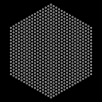
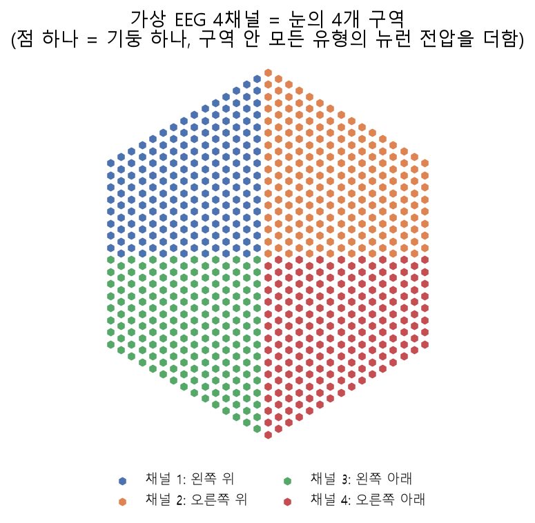

배선도만으로
초파리의 눈을
학습시키다
Lappalainen et al., Connectome-constrained networks predict neural activity across the fly visual system, Nature 634, 1132–1140 (2024)
재미있는 오픈소스에서 시작했다
- 초파리 뇌 지도(커넥톰)가 오픈소스로 공개된 것을 봤다.
- 사람들이 그 지도로 초파리 뇌에게 게임을 시키는 등 여러 실험을 하고 있었다.
- 관련 논문을 찾다가 Nature에 실린 이 논문을 알게 됐다.
- 읽어 보니 신호처리·머신러닝 수업에서 배우는 것과 이어져 있었다.
연구 분야나 응용 목적에서 출발한 것이 아니라, 재미있어 보여서 골랐다.
수업에서 배운 것이 논문 어디에 나오나
| 수업 개념 | 이 논문에서 |
|---|---|
| RNN, 활성화 함수 | 뇌 모델 자체가 ReLU를 쓰는 순환 신경망 |
| 역전파, 경사 하강법 | 시간을 펼친 역전파(BPTT) + Adam으로 학습 |
| CNN, 가중치 공유 | 세포 유형마다 파라미터 공유, 디코더는 육각 CNN |
| 과적합 방지 | 적은 파라미터, Dropout, 데이터 증강 |
| 검증, 모델 선택 | 검증 손실로 50개 모델 순위 매기기 |
| EEG, 신호처리 | 내 실험: 섞인 신호에서 정보 읽어내기 |
배선도는 있는데, 뇌가 어떻게 "동작"하는지는 모른다
커넥톰이 알려 주는 것
누가 누구와 연결됐는지, 시냅스가 몇 개인지, 흥분성인지 억제성인지
커넥톰이 알려 주지 않는 것
각 뉴런이 얼마나 빨리 반응하는지(시간 상수), 쉬고 있을 때 전압(휴지 전위), 연결이 실제로 얼마나 센지 → 이걸 모르면 활동을 계산할 수 없다
기존에 이 빈칸을 채우던 방법
세포 유형마다 전극·칼슘 이미징으로 잰다. 64개 유형을 다 재려면 수십 년, 작은 세포는 재기도 어렵다.
측정한 반응에 모델 값을 맞춘다. 측정이 있는 세포에만 쓸 수 있고, 새 예측은 하기 어렵다.
측정 없이, 배선도 + "이 회로가 하는 일"만으로 뉴런 하나하나의 활동을 예측할 수 있을까?
커넥토믹스(배선도)와 딥러닝(학습)을 처음으로 이 규모에서 합쳤다
| 데이터에 맞춘 모델 | 과제 기반 딥러닝 예: 물체 인식 CNN으로 원숭이 시각피질 설명 | 이 논문 (DMN) | |
|---|---|---|---|
| 학습에 실제 뉴런 측정 | 필요 | 불필요 | 불필요 |
| 모델 구조 | 연구자가 설계 | 일반 CNN/RNN | 커넥톰 그대로 |
| 모델 뉴런 ↔ 실제 뉴런 | 일부 | 대응 없음 (집단 수준 비교) | 하나하나 대응 (45,669개) |
| 검증 단위 | 맞춘 세포 | 뇌 영역 전체의 표현 유사도 | 세포 유형 하나하나 |
| 측정 안 된 세포 예측 | 어렵다 | 대응 뉴런이 없어 불가 | 가능 (실험 가설이 됨) |
과제 기반 딥러닝은 "뇌 전체가 비슷한 표현을 배운다"까지만 말할 수 있다. DMN은 "이 세포가 이렇게 반응한다"고 말하고 실험으로 바로 확인할 수 있다.
왜 이 논문이 새로운가
측정 없이 예측한다
구조는 배선도로 고정하고, 남은 값은 과제(움직임 감지)를 풀도록 학습. 뉴런 측정 데이터는 학습에 한 번도 쓰지 않는다. 그런데도 기존 26개 연구의 측정과 맞았다.
모델 뉴런 = 실제 뉴런
모델 뉴런 하나가 "T4a, 몇 번째 기둥"처럼 실제 뉴런 하나에 대응. 그래서 실제 실험과 세포 단위로 바로 비교하고, 측정 안 된 세포에 대해 예측을 내놓을 수 있다.
규모
시각엽 움직임 경로의 64개 세포 유형, 뉴런 45,669개, 연결 약 151만 개를 한 모델로 학습. 일부 회로가 아니라 경로 전체.
불확실성까지 본다
같은 설정으로 50개 모델을 학습. 모델끼리 예측이 일치하는 세포는 믿을 만하고, 엇갈리는 세포는 배선도와 과제만으로는 정해지지 않는다는 뜻.
핵심 메시지: 배선도만으로는 동작을 모르고, 딥러닝만으로는 실제 뉴런과 대응이 없다. 둘을 합치면 "측정하지 않은 뇌의 활동"을 예측할 수 있다.
모델은 연결 구조가 고정된 연속시간 순환 신경망(RNN)
| RNN 용어 | DMN에서 |
|---|---|
| 은닉 상태 ht | 뉴런 45,669개의 전압 V |
| 순환 가중치 행렬 W | 커넥톰 (희소 행렬, 연결 약 151만 개) |
| 활성화 함수 | ReLU: 전압이 0보다 클 때만 신호를 보낸다 |
| 편향 b | 휴지 전위 Vrest |
| 시간 펼치기 | dt(학습 시 20 ms)마다 오일러 방법으로 한 단계씩 |
무엇을 고정하고, 무엇을 배우나
flyvis 코드(PPNeuronIGRSynapses)와 사전학습 모델에서 직접 확인한 값
귀납적 편향: 파라미터를 2,000분의 1로 줄인다
일반 RNN이라면 연결 약 151만 개마다 가중치를 따로 배워야 한다. DMN은 같은 세포 유형끼리 값을 공유해서 734개만 배운다. 721개 기둥 어디서나 같은 회로가 반복되기 때문이다. CNN이 이미지의 모든 위치에 같은 필터를 쓰는 가중치 공유와 같은 생각이다.
값이 적으니 광류 데이터만으로 학습되고, 처음 보는 자극에도 일반화된다.
배운 값이 "T4a의 시간 상수"처럼 생물학적 의미를 가진다.
모델 뉴런 = 실제 뉴런이라 실험 결과와 바로 비교한다.
움직임 감지는 "어느 신호가 먼저 오나"(시간 차)가 핵심이라 시간 동역학이 필요하다. ReLU는 "일정 전압 이상일 때만 신호를 보낸다"는 시냅스 성질을 가장 단순하게 표현한다.
출력은 작은 육각 CNN이 읽는다
디코더가 크면 디코더 혼자 움직임을 계산해 버린다. 층 2개, 채널 8개로 작게 두면 움직임 계산을 뇌 모델(DMN)이 맡을 수밖에 없다. 그래야 DMN 안에서 T4/T5 같은 방향 감지 세포가 생겨난다.
겹눈 기둥은 육각 격자라서, 정사각 필터를 육각 모양으로 가린(mask) 합성곱을 쓴다.
BatchNorm(학습 안정화), Dropout(과적합 방지), 합성곱(가중치 공유).
구조: flyvis DecoderGAVP, 사전학습 모델 설정 파일(shape [8, 2], kernel 5, p_dropout 0.5)에서 확인
영화 장면에서 광류를 맞히도록 학습한다
| 설정 (사전학습 모델 파일에서 확인) | 배치 4 | 반복 250,000번 | dt 20 ms | 19프레임 | 잡음 σ 0.08 | 뒤집기·회전 확률 0.5 | 4-fold 분할 |
|---|
머신러닝 관점에서 이 파이프라인이 특별한 세 가지
지도학습인데 "뉴런의 정답"은 없다
손실은 광류 오차뿐. 뉴런이 어떻게 반응해야 하는지는 한 번도 알려 주지 않는다. 과제를 잘 풀다 보니 뉴런이 실제 뇌처럼 반응하게 된다는 가설을 시험한다.
테스트 데이터가 아예 다른 종류
학습: 영화 장면 → 광류. 평가: 실험실 자극(막대, 깜빡임) → 실제 뉴런 반응. 학습과 테스트가 완전히 분리된 가장 엄격한 일반화 테스트다.
해가 하나로 정해지지 않는다
같은 설정으로도 50개가 서로 다른 해에 도달한다. 무엇으로 고르나? 정답 뉴런 데이터를 쓰면 반칙이므로 과제 검증 손실로 고른다. 5부에서 이 선택이 맞는지 직접 확인한다.
측정 없이 학습한 모델이 실제 뉴런 반응을 예측했다
학습에 쓰지 않은 기존 26개 실험 연구의 측정과 모델 예측이 맞았다.
T4(밝은 가장자리)와 T5(어두운 가장자리)의 하위 유형 a~d가 각각 다른 한 방향(앞→뒤, 뒤→앞, 위, 아래)에만 반응. 누구도 "방향을 감지하라"고 가르치지 않았다.
아직 측정되지 않은 세포 유형의 반응도 예측 → 실험할 가설을 준다.
모델끼리 예측이 일치하는 세포는 배선도+과제로 충분히 정해지고, 엇갈리는 세포는 추가 정보가 필요하다.
내 노트북에서 재현한 것 (CPU만)
- 공개된 사전학습 모델 50개 전부에 가장자리 자극 24개(12방향 × 밝은/어두운)
- T4a–d, T5a–d의 방향 튜닝을 실제 측정(Maisak 2013)과 비교
- 과제 오차로 모델을 고르는 것이 맞는지 50개로 확인
- 모델 1개 약 1분, 50개 약 50분
방향 감지 뉴런은 정말 한 방향만 좋아할까?

검증 오차 1위 모델은 8개 하위 유형의 선호 방향을 모두 맞혔다 (오차 45° 미만). 상위 10개 각각으로 보면 하위 유형마다 4~8개 모델이 맞혔다. 해가 하나로 정해지지 않는다는 논문의 지적 그대로다.
막대 하나가 지나갈 때 겹눈 전체의 반응
밝은 막대가 0°(오른쪽) 방향으로 지나가면, 721개 기둥의 T4 뉴런이 막대가 지나는 자리를 따라 차례로 반응한다.
4개 하위 유형 중 이 방향(0°)을 좋아하는 T4b가 가장 크게 반응한다.
오른쪽 아래 = 이 활동을 4구역으로 뭉뚱그려 더한 "가상 EEG". 6부의 실험에서 다시 나온다.
과제를 잘 푸는 모델일수록 실제 뇌와 더 비슷했다
검증 오차 1~10위 모델은 평균 5.1개, 41~50위는 2.8개의 하위 유형을 맞혔다 (순위 상관 ρ = −0.32). 뉴런 데이터를 보지 않고 과제 성능만으로 모델을 골라도 생물학적으로 더 맞는 모델이 뽑힌다. 그래서 6부 실험의 "녹화 장치"로 검증 오차 1위 모델을 썼다.
이 논문이 답하지 않은 것
세포 단위 활동만 다룬다
모델은 뉴런 하나하나의 전압을 내놓는다. 하지만 우리가 실제로 쉽게 얻는 신호(EEG 등)는 수많은 뉴런이 섞인 신호다. 섞인 신호로도 뇌가 본 것을 읽어낼 수 있는지는 다루지 않았다. ← 내가 다룰 한계
해가 하나로 정해지지 않는다
같은 설정으로도 모델마다 다른 해. 재현에서도 하위 유형마다 상위 10개 중 4~8개만 맞혔다.
단순한 뉴런 모델
스파이크 없는 점 뉴런, 즉각 전달 시냅스. 수상돌기 계산, 신경조절물질 등은 빠졌다.
과제가 하나
광류 예측만으로 학습. 색, 물체, 비행 제어 같은 다른 기능에 관여하는 세포는 제대로 정해지지 않을 수 있다.
왜 1번을 골랐나
2~4번은 모델을 다시 학습해야 풀 수 있는데, 노트북 CPU로는 50개 모델 재학습(모델당 25만 번 반복)이 불가능하다. 1번은 학습된 모델을 그대로 두고 그 위에서 수업의 머신러닝 기법(특징 추출·선택, 교차검증, 누수 방지, 분류기 비교)으로 답할 수 있다. 그리고 수업에서 배운 EEG·신호처리와 이 논문을 직접 잇는 질문이다.
같은 가상 뇌를 "섞어서" 측정하면 정보가 얼마나 사라질까?
머신러닝 질문으로 바꾸면
신호를 합쳐 차원을 줄이면(65채널 → 4채널 → 1채널), 움직임 방향을 맞히는 데 필요한 정보가 얼마나 사라질까? 그 정보는 어떤 채널, 어떤 특징에 들어 있을까?
방법: 학습된 뇌 모델을 고정된 녹화 장치로 쓰고, 세포 단위 신호와 섞인 신호에서 각각 움직임 방향을 분류한다. 수업에서 강조한 특징 추출 · 특징 선택 · 교차검증 · 데이터 누수 방지를 그대로 적용한다.
왜 가상 뇌에서?
실제 실험에서는 같은 뇌에서 세포 단위 신호와 섞인 신호를 동시에, 정답과 함께 얻기 어렵다.
가상 뇌에서는 둘 다 만들 수 있고 정답(방향)도 안다. 시뮬레이션이라서 가능한 비교다.
뇌 모델은 재학습하지 않는다(실제 연구자도 뇌를 바꿀 수 없고 기록만 한다). 학습하는 것은 내 분류기뿐.
수업의 머신러닝 4단계를 그대로 따른다
48조건 × 20번 측정
8방향 × 밝은/어두운 막대 × 속도 3. 최고 모델에 보여 주고 전압 녹화. 채널마다 가우시안 측정 잡음(신호 표준편차의 0.1/0.5/1/2배)을 더해 20번 반복 측정 → 잡음 단계마다 960샘플
"언제, 얼마나 세게"
채널마다 최고·최저 전압, 최고점까지 시간, 평균 = 4개. 뉴런 전압은 진동하지 않고 짧게 반응해서 시간 영역 특징이 맞다(PSD와 직접 비교). z-score는 학습 fold로만 fit
로지스틱 회귀 + L2
8방향 소프트맥스 = 단층 퍼셉트론. 단순한 선형 분류기로 맞히면 정보가 신호 자체에 있다는 뜻. 선형 SVM, K-NN과도 비교
속도 기준 교차검증
두 속도로 학습, 처음 보는 속도로 테스트(3 fold). 같은 자극의 반복 측정이 학습·테스트에 섞이지 않는다. 특징 선택·튜닝은 안쪽 fold에서만(nested CV)
왜 잡음? 시뮬레이션은 같은 자극에 항상 같은 반응이라 잡음이 없으면 정확도가 무의미하게 100%가 된다. 왜 4단계? 한 값으로 정하면 근거를 대기 어렵다. 8방향 샘플 수는 모두 120개로 같다(표집 편향 방지).
같은 뇌를 세 가지 방식으로 "측정"한다

| 신호 | 만드는 법 | 비유 | 특징 수 |
|---|---|---|---|
| A · 65채널 | 세포 유형마다 뉴런 전압 평균 | 특정 세포만 골라 기록 | 260 |
| B · 4채널 | 유형 구분 없이 4구역마다 전부 합 | EEG 전극 4개 | 16 |
| B · 1채널 | 눈 전체를 전부 합 | EEG 전극 1개 | 4 |

섞을수록, 잡음이 클수록 방향을 덜 읽어낸다
세포 단위 신호는 잡음 2배에서도 98%. 가상 EEG 4채널은 97% → 54%, 1채널은 74% → 29%로 떨어진다(우연 12.5%). B4는 대각선 방향(45°, 135°, 315°)은 잘 맞히고 0°/180°/270°를 헷갈린다. 대각선 막대는 한 구역을 먼저 지나지만, 수평·수직 막대는 두 구역을 동시에 지나서 구역 간 시간 차가 사라지기 때문이다.
세포 유형 3개면 충분했다. 그리고 그것은 T4/T5였다
순차 전진 선택(래퍼 방식): 정확도를 가장 많이 올리는 세포 유형을 하나씩 추가. 선택은 각 fold의 학습 데이터 안에서 안쪽 교차검증으로만 했다. (잡음 1배)
fold마다 먼저 뽑힌 세포 유형
세 fold 모두 T4a를 첫 번째로, T5d를 세 번째로 뽑았다. 3개로 98.1%, 4개로 99.5%. 사람이 알려 주지 않았는데 데이터 기반 특징 선택이 5부에서 본 방향 감지 뉴런을 다시 찾아냈다.
채널 수를 4개로 맞추면? "몇 개"보다 "어떤 것"이 중요하다
신호 A는 65채널, 가상 EEG는 4채널이라 비교가 불공평하다는 반론이 가능하다. 그래서 신호 A에서 세포 유형 4개를 무작위로 200번 뽑아 같은 방법으로 평가했다. (잡음 1배)
| 4채널 신호 | 정확도 |
|---|---|
| 잘 고른 세포 유형 4개 (특징 선택) | 99.5% |
| 가상 EEG 4채널 (공간 구역) | 84.1% |
| 무작위 세포 유형 4개 (중앙값) | 68.6% |
가상 EEG 4채널은 무작위 4개 조합의 80%보다 낫다. 공간 구역 정보에도 방향 정보가 꽤 남아 있다. 하지만 방향을 담당하는 세포를 골라 재는 것이 압도적이다.
무엇을 뽑느냐가 무엇으로 분류하느냐보다 중요했다
특징: 시간 영역 vs PSD
시간 영역 특징이 모든 신호에서 우세(A: 99.9% vs 75.1%). 반응이 진동하지 않고 짧게 일어나서 주파수 성분에는 방향 정보가 적다. 수업의 "데이터 특성에 맞는 특징"을 숫자로 확인.
분류기 (C, k는 안쪽 교차검증으로 선택)
세 분류기 차이는 몇 %p 이내. 선형 분류기로도 충분 → 방향 정보는 선형으로 읽히는 형태로 신호에 들어 있다. 섞인 1채널에서만 K-NN이 조금 낫다(45% vs 41%).
정답을 섞은 가짜 데이터에서도 "성능"이 나올까?
48개 조건의 방향 정답을 무작위로 섞었다. 이제 신호와 정답 사이에 관계가 없으므로 정직한 정확도는 우연 수준(12.5%)이어야 한다.
진짜 데이터에서 검증 방법 비교 (가상 EEG 4채널)
| 속도 기준 fold (올바름) | 84.1% |
| 전체 데이터로 정규화 | 84.2% |
| 무작위 5-fold (반복 측정 섞임) | 85.5% |
이 데이터에서는 차이가 작았다(최대 +1.4%p, 특징 선택에서도 최대 +2.5%p). 잡음이 측정마다 독립이라 반복 측정을 외워도 이득이 작기 때문. 누수의 크기는 데이터마다 다르므로 처음부터 막는 것이 원칙이다.
정리
배선도로 구조를 고정한 RNN(학습 값 734개)을 광류 과제로 학습 → 측정 없이 뉴런 하나하나의 반응을 예측. 커넥토믹스와 딥러닝의 결합.
노트북 CPU로 50개 모델 전부 확인. 최고 모델이 T4/T5 8개 하위 유형을 모두 맞혔고, 과제 오차가 낮을수록 실제 뇌와 더 비슷했다(1~10위 5.1개 vs 41~50위 2.8개).
신호를 섞으면 방향 정보가 크게 줄었다(잡음 1배: 99.9% → 84.1% → 40.3%). 하지만 세포 유형 3~4개를 잘 고르면 거의 다 되찾는다. 정보는 채널 수보다 어떤 채널을 재느냐에 달려 있었다.
내 실험의 한계
- 시뮬레이션 안의 결론. 실제 뇌는 실측 데이터로 확인해야 한다.
- 가상 EEG는 단순 합. 두피·두개골에 의한 왜곡은 반영하지 않았다.
- 잡음은 시점·채널마다 독립인 가우시안. 실제 잡음은 시간·채널 상관이 있다.
- 서로 다른 자극은 48개뿐. 960샘플은 잡음 반복이라 조건 단위로 교차검증했다.
- 초파리 시각계 하나, 모델 하나(검증 오차 1위)로 녹화했다.
감사합니다
Lappalainen, J. K. et al. Connectome-constrained networks predict neural activity across the fly visual system. Nature 634, 1132–1140 (2024).
flyvis (공식 코드·사전학습 모델 50개): github.com/TuragaLab/flyvis
Maisak, M. S. et al. A directional tuning map of Drosophila elementary motion detectors. Nature 500, 212–216 (2013). — T4/T5 실제 측정 튜닝 곡선 (flyvis에 포함)
재현·실험 코드: github.com/JsonParc/ML_project — scripts/00–06 (Python 3.12, flyvis 1.2.0, scikit-learn 1.9.1, CPU만 사용)